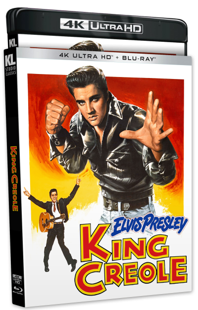

Kino Lorber Announces King Creole 4k

Kino Lorber has announced their new 4k release of King Creole, due to be released July 2026.
Elvis' fourth film, King Creole, is set to receive a 4k release for the first time through Kino Lorber, making it only the second of Elvis' feature-films to be released physically on 4k, with the other being Blue Hawaii. Featuring a reversible cover using the French poster for the film, the set will contain a new 4k scan of the 35mm camera negatives on a 4KUHD disc and a standard Blu-Ray, containing a HD version of the restoration and additional bonus features. See the full details below (taken from the Kino Lorber website):
2020 HDR/Dolby Vision Master by Paramount Pictures – From a 4K Scan of the 35mm Original Camera Negative! Elvis Presley brings a new beat to Bourbon Street in King Creole! Directed by the legendary Michael Curtiz (Casablanca), Elvis plays a troubled youth whose singing sets the French Quarter rockin'. With a sweet girl to love him and nightclubbers cheering, it looks like he'll shake off his past and head for the top. But a mobster (Walter Matthau, The Taking of Pelham One Two Three) and his man-trap moll (Carolyn Jones TV's The Addams Family) could snare him into a life of crime.
Disc One (4k UHD):
- 2020 HDR/Dolby Vision Master by Paramount Pictures – From a 4K Scan of the 35mm Original Camera Negative
- NEW Audio Commentary by Film Historian Imogen Sara Smith
- 5.1 Surround and Lossless 2.0 Audio
- Triple-Layered UHD100 Disc
- Optional English Subtitles
Disc Two (Blu-ray - Region-A)
- Brand New HD Master by Paramount Pictures – From a 4K Scan of the 35mm Original Camera Negative
- NEW Audio Commentary by Film Historian Imogen Sara Smith
- Filmmaker Focus: Leonard Maltin discusses King Creole
- Theatrical Trailer (Newly Restored in 4K)
- 5.1 Surround and Lossless 2.0 Audio
- Dual-Layered BD50 Disc
- Optional English Subtitles
This release can be purchased from Kino Lorber on their official site. The street-date for the release is the 28th of July.
International fans looking to purchase this release should note that Kino Lorber Blu-Rays are Region-A locked (US) and thus the second disc may not play on your region's Blu-Ray players (4kUHD discs are region-free). Furthermore, Kino Lorber's official store only ships to the US and Canada, so make sure you make your purchase from a reputable source that will import it to your country.